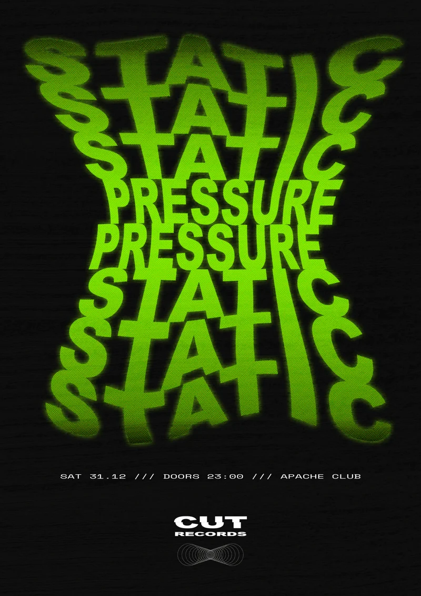
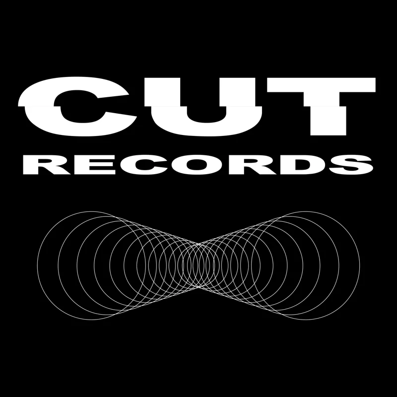
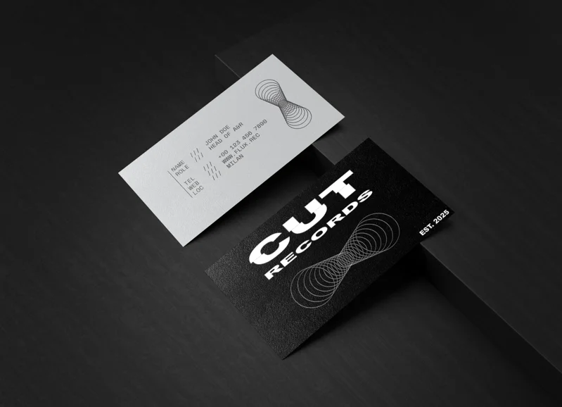
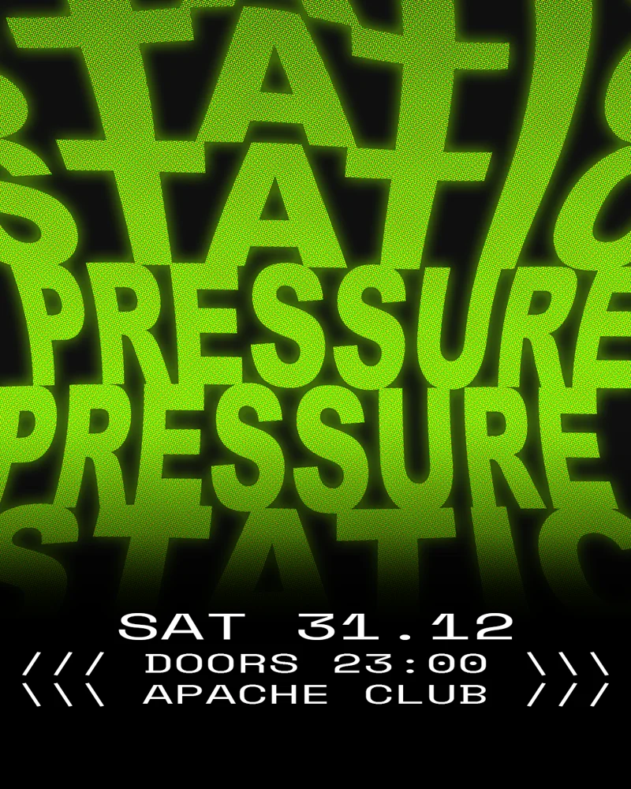

The project began with Static Pressure, a typographic event poster for a fictional electronic music label. Distorted, layered type and acid green capture the energy of a club. The identity expands into a logo, business cards and Instagram assets. Heavy display type pairs with a Lissajous curve motif referencing sound waves and frequency; the business cards contrast a bold black face with a minimal grey reverse.







